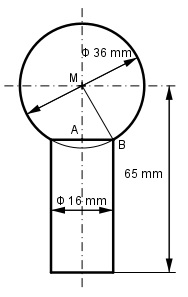

Aufgabe 378 Wie groß ist die Masse m des Kugelbolzens, wenn seine Dichte 7,85 g/cm3 beträgt?

VBolzen = VKugel + VZylinder - VKugelabschnitt dKugel3 * л 363 mm3 * л VKugel = -------------- = --------------- = 6 6 = 24 417 mm3 rZylinder = dZylinder/2 = 16 mm/2 = 8 mm Satz von Pythagoras im Dreieck ABM: AB = rZylinder BM = rKugel = dKugel/2 = 36 mm/2= 18 mm BM2 = AM2 + AB2 |-AB2 AM2 = BM2 - AB2 = = 182 mm2 - 82 mm2 = 260 mm2 |√ AM = 16,1 mm hZylinder = 65 mm - AM = = 65 mm - 16,1 mm = 48,9 mm VZylinder = л * rZylinder2 + hZylinder = = л * 82 mm2 * 48,9 mm = 9 827 mm3 hKugelabschnitt = rKugel - AM = = 18 mm - 16,1 mm = 1,9 mm л VKugelabschnitt = --- * hKugelabschnitt2 * 3 * (3 * rKugel - hKugelabschnitt) л VKugelabschnitt = --- * 1,92 * (3*18 - 1,9) mm3 = 3 = 196,9 mm3 VBolzen = 24 417 mm3 + 9 827 mm3 - 196,9 mm3 = = 34 047,1 mm3 VBolzen = 34,05 cm3 m = ρ * VBolzen = 7,85 g/cm3 * 34,05 cm3 = = 267,3 g